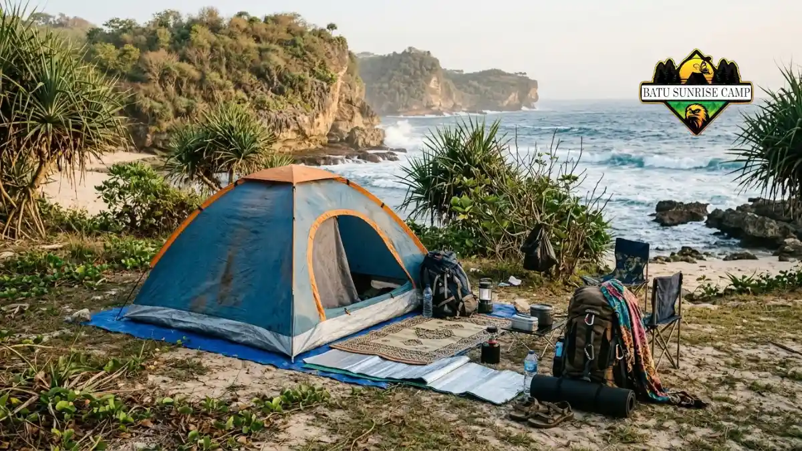

Biaya camping di pantai Jogja umumnya mencakup tiket masuk dan retribusi berkemah puluhan ribu rupiah per orang, ditambah parkir, makan, serta sewa perlengkapan bila diperlukan.
- Contoh tarif 2025: Siung sekitar Rp20.000 per orang, Wohkudu sekitar Rp22.000 per orang.
- Biaya tambahan seperti parkir, makan, dan bahan bakar sering lebih besar daripada tarif camping.
- Glamping dihargai per paket sehingga lebih mahal daripada camping biasa.
- Menghemat biaya dapat dilakukan lewat hari kerja, patungan, dan meminjam perlengkapan.
- Tarif dapat berubah sehingga perlu dikonfirmasi ke pengelola.
Berapa biaya tiket dan retribusi camping di pantai Jogja?
Tiket dan retribusi camping di pantai Gunungkidul berkisar belasan hingga puluhan ribu rupiah per orang, misalnya sekitar Rp20.000 di Pantai Siung.
Pantai Siung dilaporkan memiliki tiket masuk sekitar Rp5.000 dan biaya camping tambahan Rp15.000 pada Oktober 2025, sehingga total sekitar Rp20.000 per orang.
Pantai Wohkudu dilaporkan menarik Rp2.000 per orang untuk masuk dan sekitar Rp20.000 per orang untuk camping pada September 2025, sehingga total sekitar Rp22.000. Pantai Jungwok dilaporkan hanya sekitar Rp5.000 untuk tiket masuk dan camp.
Sebagai simulasi sederhana, kelompok empat orang di Siung membayar sekitar Rp80.000 untuk tiket dan camp berdasarkan tarif 2025.
Angka tersebut belum mencakup parkir, transportasi, dan makan. Tarif dapat berubah setiap tahun, jadi gunakan angka di atas sebagai gambaran awal.
Apa saja komponen biaya camping di pantai?
Komponen biaya camping di pantai meliputi tiket masuk, retribusi berkemah, parkir kendaraan, transportasi, makanan, air bersih, sewa tenda atau perlengkapan, dan cadangan darurat.
- Tiket masuk dan retribusi camping: Dibayar per orang di pos pengelola.
- Parkir kendaraan: Tarif berbeda untuk motor dan mobil, dan dapat bertambah bila menginap.
- Transportasi: Bahan bakar, tol bila ada, atau sewa kendaraan.
- Makanan dan minuman: Bekal sendiri atau membeli di warung pantai.
- Air bersih: Beberapa pantai terpencil mengharuskan pengunjung membawa air sendiri.
- Sewa perlengkapan: Tenda, matras, atau lampu bila tidak membawa sendiri.
- Cadangan darurat: Dana kecil untuk kebutuhan tak terduga seperti perbaikan kendaraan.
Menurut laporan kinerja tahun 2025, Dinas Pariwisata Gunungkidul menetapkan indikator nilai belanja wisatawan, yaitu rata-rata pengeluaran wisatawan, dengan target Rp190.000.
Angka target ini menunjukkan bahwa pengeluaran total wisatawan biasanya jauh lebih besar daripada tiket masuk saja.
Berapa biaya glamping dibanding camping biasa?
Glamping umumnya lebih mahal daripada camping biasa karena harga mencakup tenda siap pakai, dan paket seperti reguler, VIP, atau VVIP memiliki tarif berbeda sesuai fasilitas.
Glamping di Pantai Watu Kodok menawarkan sewa tenda dengan paket reguler, VIP, dan VVIP, serta warung makan di lokasi, berdasarkan laporan RRI pada Mei 2026.
Harga paket tidak dipublikasikan seragam dan dapat berubah tergantung musim, sehingga calon pengunjung perlu menanyakan langsung kepada pengelola.
Camping biasa lebih hemat bila kelompok sudah memiliki tenda dan alat masak. Glamping lebih efisien bagi pemula, keluarga dengan anak, atau pengunjung yang ingin menghindari kerepotan membawa dan memasang perlengkapan.
Pertimbangkan juga biaya sewa dan biaya makan ketika membandingkan keduanya. Pengantar untuk pemula tersedia di artikel pantai camping untuk pemula di Jogja.
Perlengkapan apa yang wajib dibawa dan mana yang bisa disewa?
Perlengkapan wajib camping pantai adalah tenda tahan angin, alas, sleeping bag, senter, air minum, dan kantong sampah, sedangkan tenda dan alas kadang tersedia untuk disewa.
Barang yang sebaiknya dibawa sendiri meliputi:
- Sleeping bag atau selimut tebal karena angin malam di tepi laut terasa dingin.
- Senter atau lampu kemah dan powerbank.
- Air minum yang cukup untuk seluruh kelompok.
- Obat pribadi dan perlengkapan P3K.
- Kantong sampah dan wadah tertutup untuk makanan.
- Pasak tambahan dan tali untuk tenda di pasir.
Barang yang kadang dapat disewa adalah tenda, matras, dan peralatan masak sederhana, tergantung pengelola.
Karena ketersediaan berbeda-beda, hubungi pengelola untuk memastikan sebelum berangkat. Dengan tenda sendiri, biaya sewa hilang tetapi beban bawaan bertambah, sehingga kelompok perlu menimbang kendaraan yang dipakai.

Perlengkapan camping lengkap siap pakai di tepi pantai karang Gunungkidul, mulai dari tenda dome, ransel carrier, hingga peralatan masak outdoor.
Bagaimana cara menghemat biaya camping di pantai?
Biaya camping pantai dapat ditekan dengan memilih hari kerja, berangkat bersama untuk patungan transportasi, membawa bekal sendiri, dan meminjam perlengkapan daripada membeli baru.
Hari kerja membantu karena kunjungan lebih sedikit. Menurut catatan Dinas Pariwisata Gunungkidul, kunjungan pada Rabu 27 Mei 2026 hanya 11.105 orang, sedangkan puncak Minggu 31 Mei 2026 mencapai 67.721 orang.
Pantai yang lebih lengang memberi ruang untuk memilih titik tenda tanpa perlu membayar lebih untuk area khusus.
Langkah hemat lain: memasak bekal sederhana di rumah, membawa air minum dari rumah, dan memakai kendaraan bersama.
Jika baru mencoba camping, meminjam tenda dari teman atau komunitas lebih bijak daripada langsung membeli. Pantai berbiaya rendah seperti Jungwok dapat menjadi pilihan, selama kondisi lokasi sudah dipastikan aman.
Bagaimana memastikan tarif camping terbaru?
Tarif camping terbaru dipastikan dengan menghubungi pengelola pantai, menanyakan petugas pos retribusi, atau mengecek kanal resmi Dinas Pariwisata Gunungkidul, karena angka dapat berubah sewaktu-waktu.
Angka dalam artikel ini bersumber dari laporan 2025 dan 2026 yang dapat berbeda dengan kondisi hari ini.
Pengelola pantai sering memperbarui tarif mengikuti peraturan daerah dan musim kunjungan.
Cara termudah adalah bertanya langsung kepada pengelola melalui media sosial resmi pantai atau menghubungi kelompok sadar wisata setempat.
Simpan bukti tiket dan tanyakan apa saja yang sudah termasuk dalam tarif, misalnya parkir, toilet, atau air.
Dengan begitu, pengeluaran dapat dicatat lebih rapi dan tidak ada kejutan di lokasi. Perencanaan lengkap lokasi dapat dilihat pada panduan pantai dengan tempat camping terbaik di Jogja.
Kesimpulan
Biaya camping di pantai Jogja relatif terjangkau, yaitu sekitar Rp20.000 per orang di Siung dan sekitar Rp22.000 per orang di Wohkudu menurut laporan 2025.
Total pengeluaran nyata bergantung pada transportasi, makan, dan sewa perlengkapan. Konfirmasi tarif ke pengelola, pilih hari kerja, dan bawa perlengkapan sendiri untuk anggaran lebih hemat.